員工APP和後台 線框稿
回作品集
前言
彙整以資訊架構與頁面布局為基礎，繪製線框稿(介面化)說明功能機制。
*版面空間有限，電腦裝置瀏覽為佳。
*版面空間有限，電腦裝置瀏覽為佳。
審閱指引
提示色說明：
連結&CTA
當前選擇、所處步驟
串接API：
裕隆人資系統API。
註記：
1.若資料無說明來源，則為建置時人工寫入。
2.網頁狀態：
初始狀態，頁面(使用者)未輸入資料。
理想狀態，頁面(使用者)完整功能操作、資料輸入。
錯誤狀態，頁面操作、資料錯誤。
空白狀態，頁面無功能、資料呈現。
局部狀態，理想狀態之外的功能操作、資料輸入。
3.頁面狀態樣貌，以後續Mockups設計呈現為準。
線框稿內容
以「申請員工福利商品、活動」流程為例。


 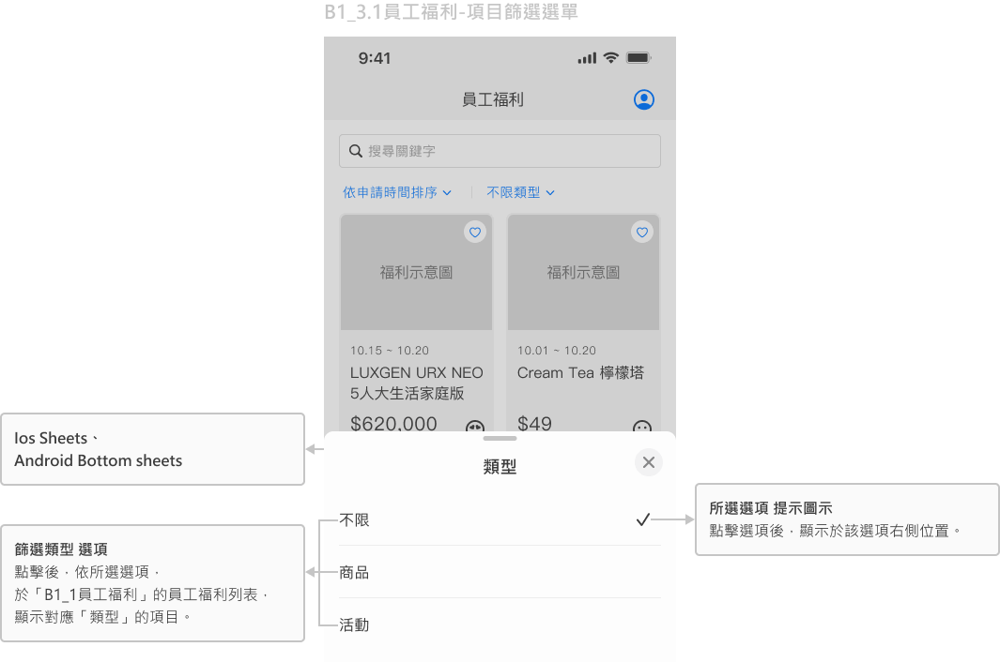
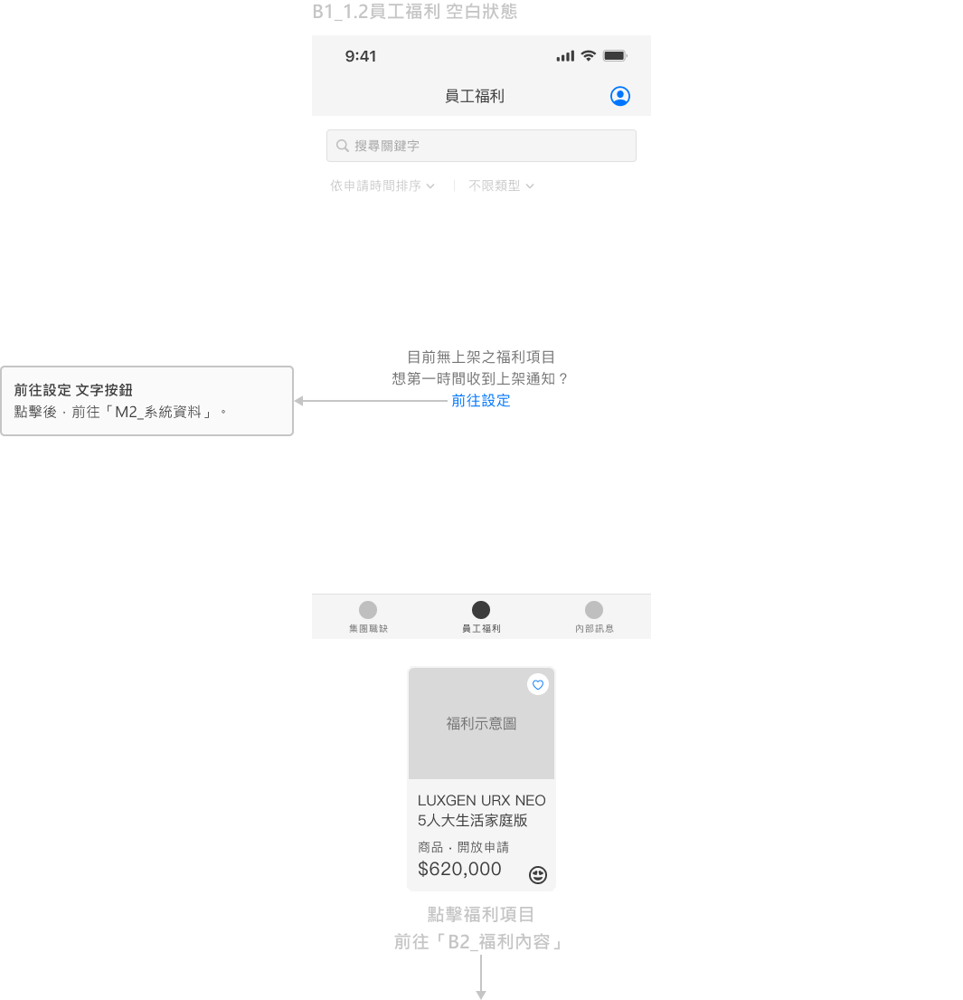
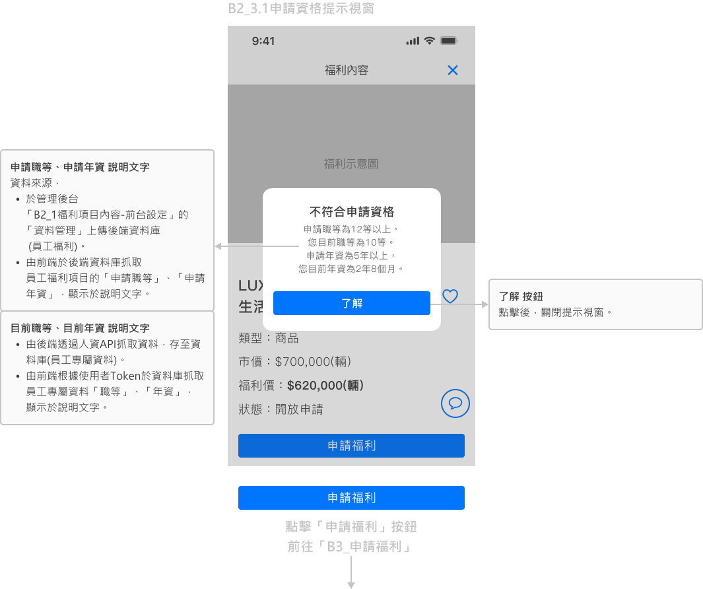
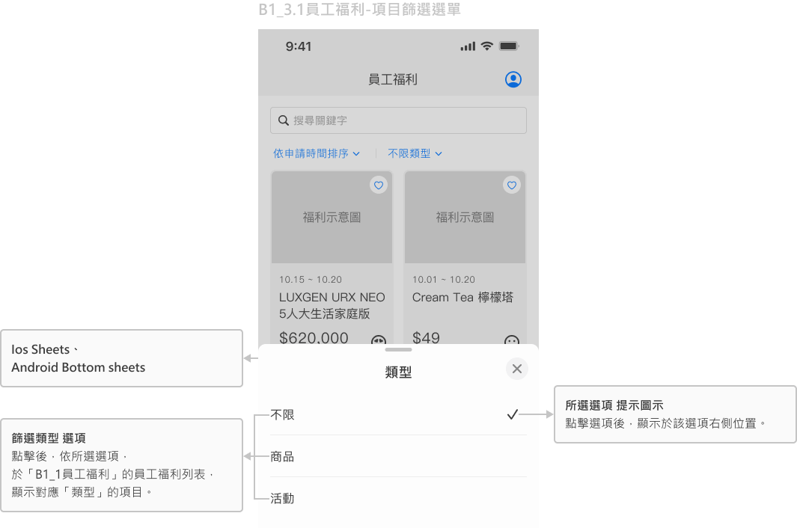
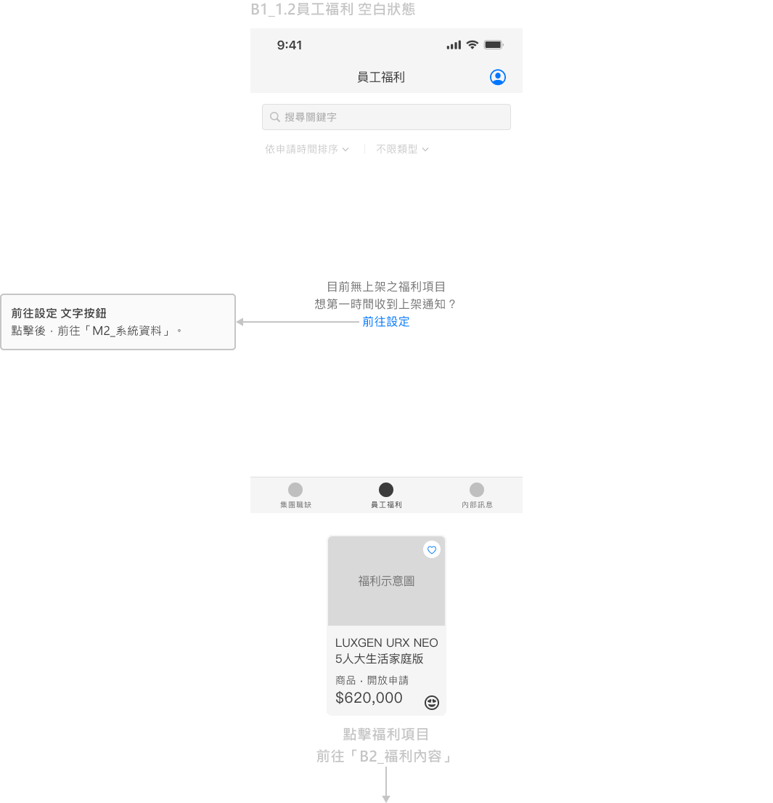
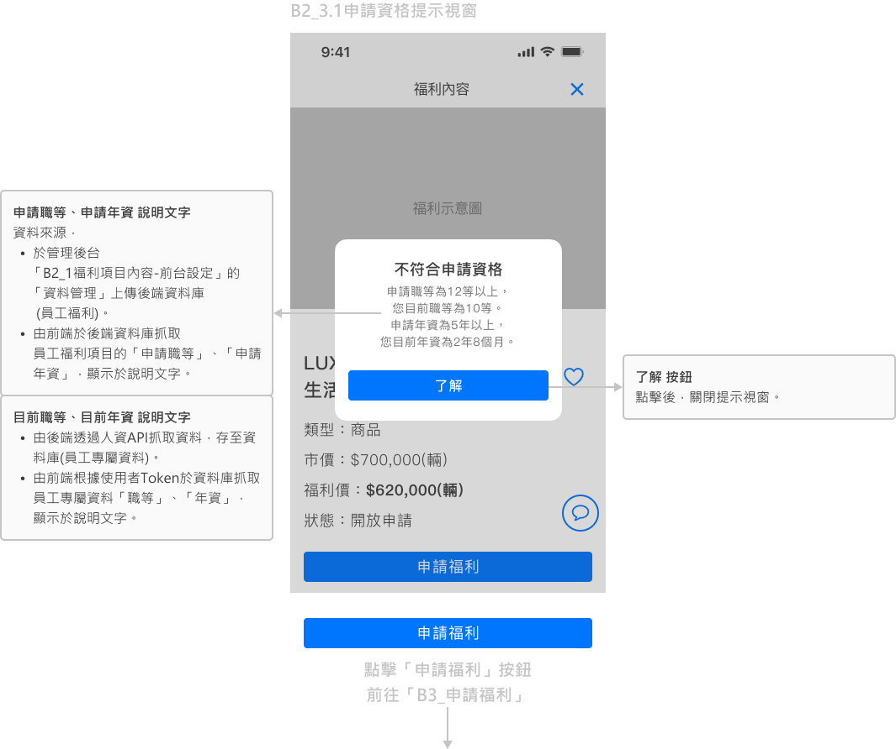
 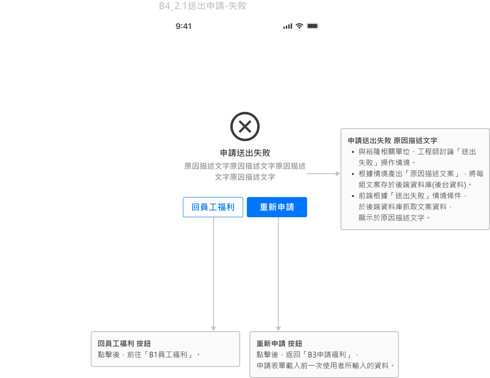
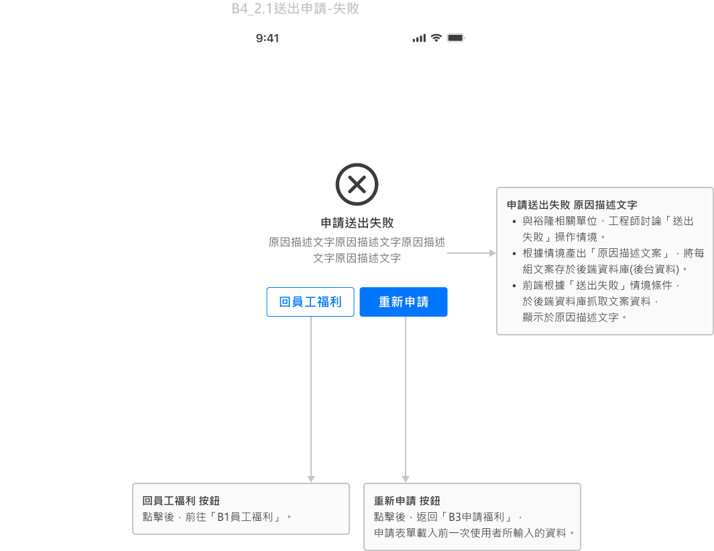
接續瀏覽管理後台
已瀏覽完 APP前台 線框稿
前言
彙整以資訊架構與頁面布局為基礎，繪製線框稿(介面化)說明功能機制。
*版面空間有限，電腦裝置瀏覽為佳。
*版面空間有限，電腦裝置瀏覽為佳。
審閱指引
提示色說明：
連結&CTA
當前選擇、所處步驟
註記：
1.若資料無說明來源，則為建置時人工寫入。
2.網頁狀態：
初始狀態，頁面(使用者)未輸入資料。
理想狀態，頁面(使用者)完整功能操作、資料輸入。
錯誤狀態，頁面操作、資料錯誤。
空白狀態，頁面無功能、資料呈現。
局部狀態，理想狀態之外的功能操作、資料輸入。
3.頁面狀態樣貌，以後續Mockups設計呈現為準。
線框稿內容
以管理「員工福利商品、活動」為例。
「B1_員工福利」一級主頁，為員工福利項目列表。
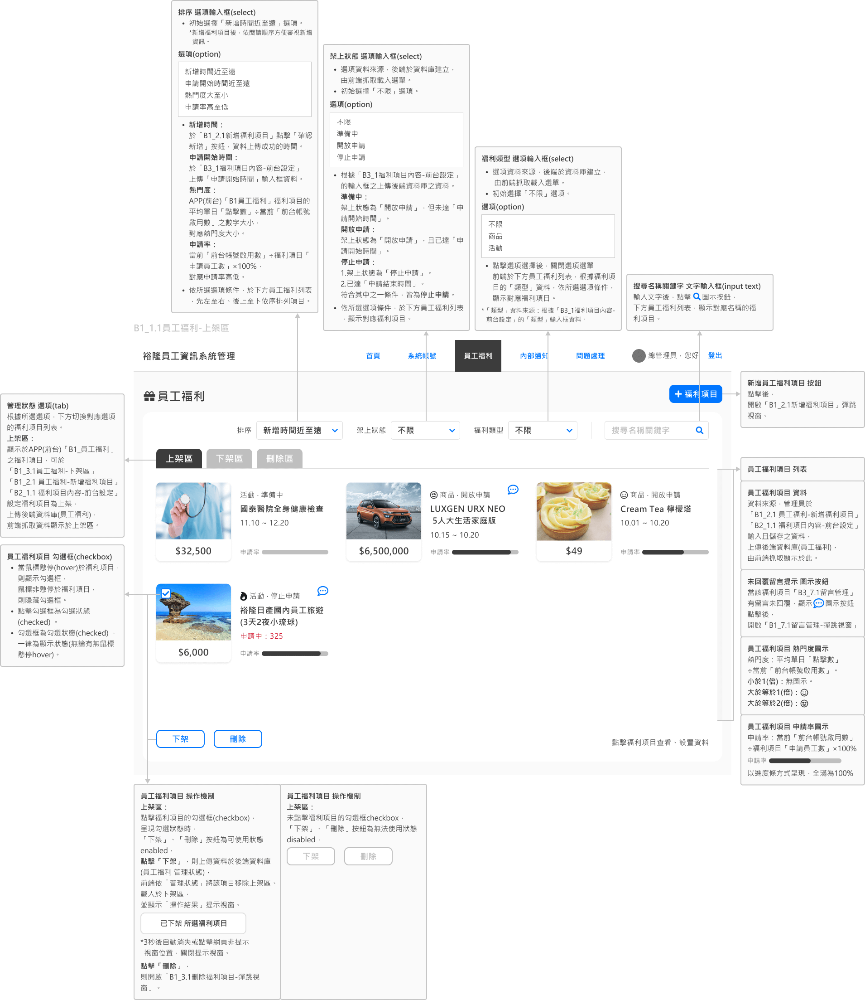
於「B1_員工福利」點擊「新增福利項目」按鈕，前往「B2_新增福利項目」

於「B1_員工福利」點擊員工福利項目，前往「B3福利項目內容」
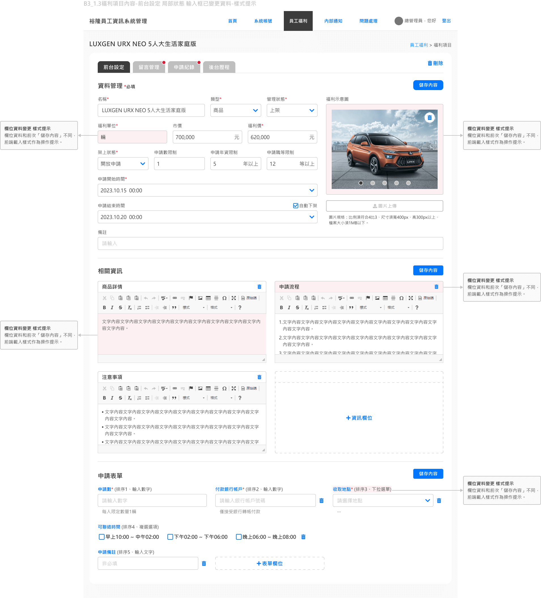
於「B3福利項目內容」點擊「留言管理」Tab選項，內容切換「留言管理」
於「B3福利項目內容」點擊「申請紀錄」Tab選項，內容切換「申請紀錄」
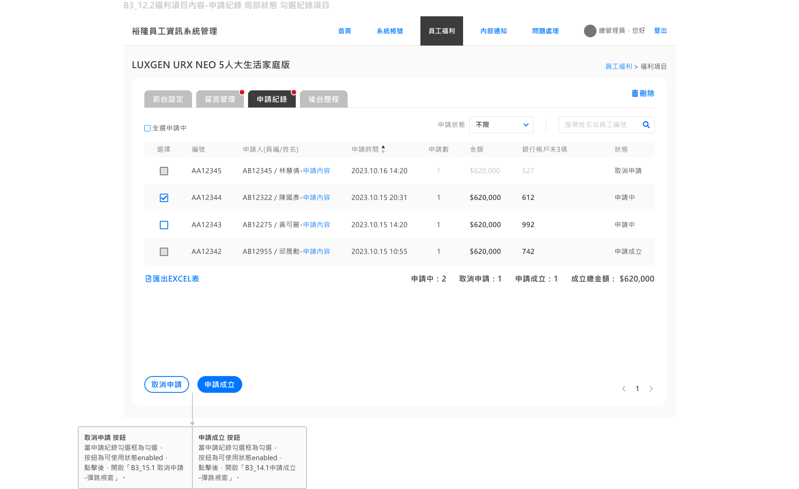
於「B3福利項目內容」點擊「後台歷程」Tab選項，內容切換「後台內容」
已瀏覽完 管理後台 線框稿